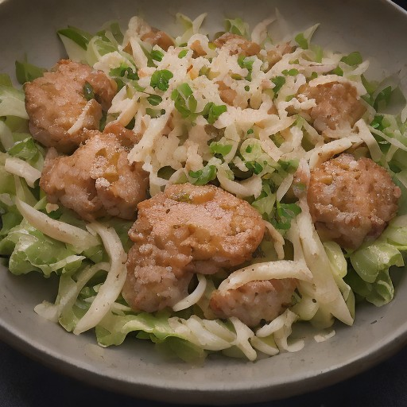

サラダ
ローストビーフ × オニオンソースの「悪魔の甘酸っぱさ」サラダ

一見すると平凡なローストビーフとオニオンソースの組み合わせ。しかし、意外な「悪魔の甘酸っぱさ」が待っている！
💡 こんな時・こんな人におすすめ！
特別な夜に、ちょっと贅沢な一品
📋 必要な材料（ポストイット風）
材料リスト 1
- ローストビーフ適量
- 玉ねぎ1個
- オニオンソース大さじ2
材料リスト 2
- マヨネーズ大さじ2
- お好みで適量
- 塩胡椒少々
🍳 作り方ステップ
1
ローストビーフは、一口サイズに切り、塩胡椒で味付けする。
2
玉ねぎは薄切りにして、オニオンソースとマヨネーズを混ぜ合わせておく。
3
サラダ皿にローストビーフを盛り、玉ねぎソースを添え、お好みでハーブやスパイスを添えて完成！
4
この悪魔的な甘酸っぱさを、ぜひあなたも体験してみてください。